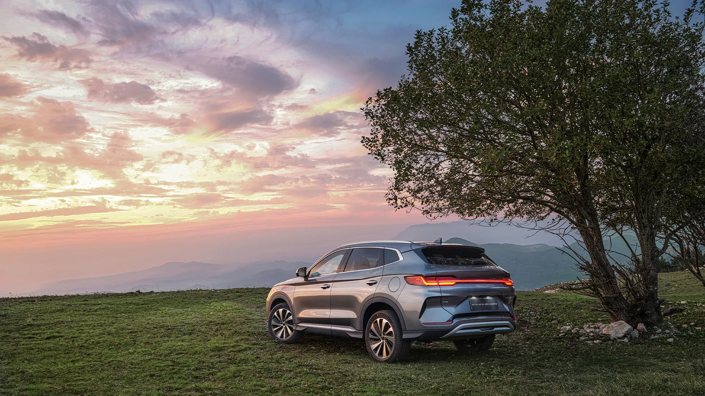
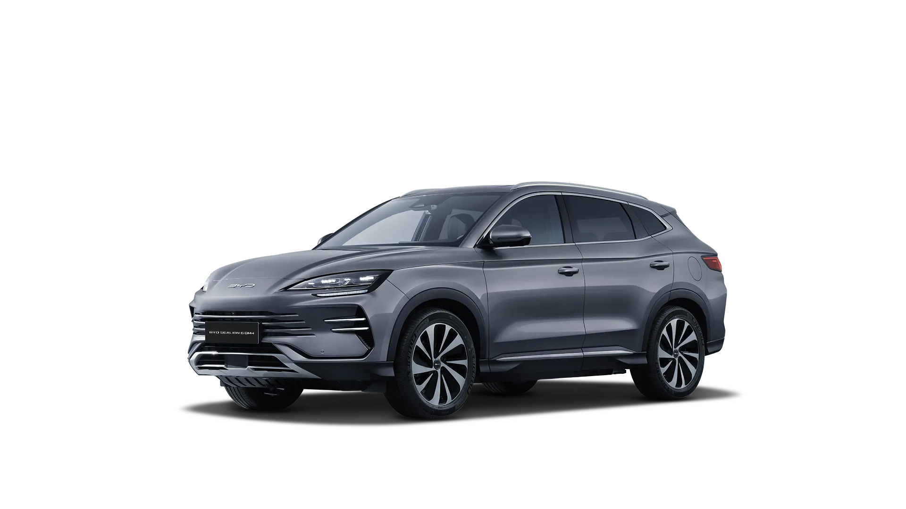
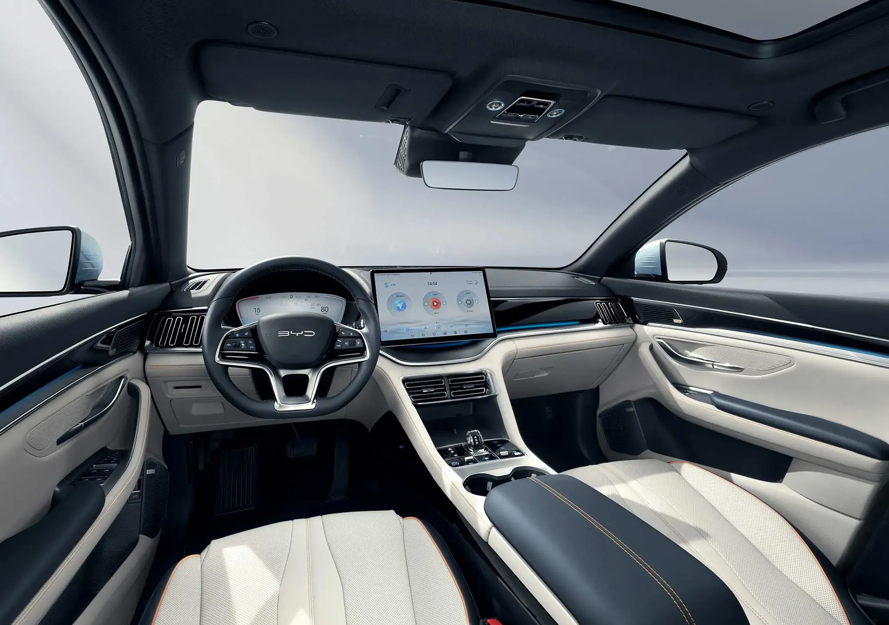
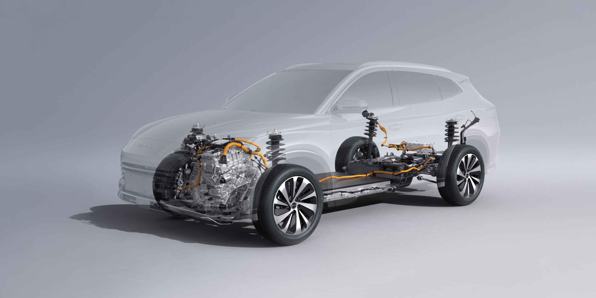
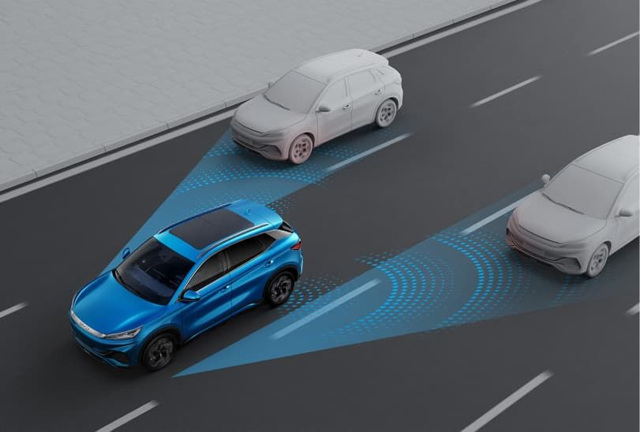
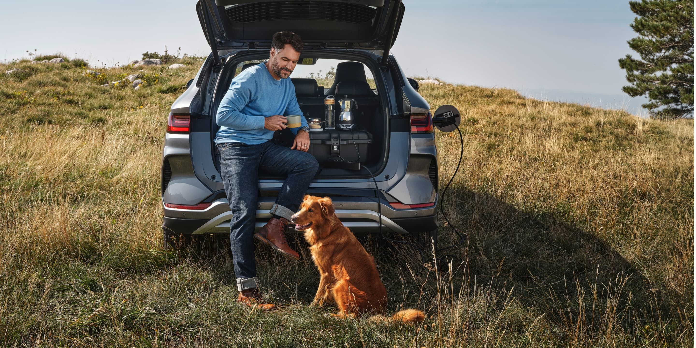

Projecting a greater light
Double U-shaped headlights with staggered light clusters provide a powerful beam for better visibility. The rear features a continuous taillight in a refined water-drop matrix pattern.


Double U-shaped headlights with staggered light clusters provide a powerful beam for better visibility. The rear features a continuous taillight in a refined water-drop matrix pattern.
Aerodynamic 19-inch wheels blend style with efficiency, reducing drag for a smooth and elegant driving experience.

Inspired by the ocean’s beauty, the crystal gear lever is surrounded by essential function buttons for easy control at your fingertips.
Front seats offer ventilation, heating, electric adjustment, and memory functions, while the rear cabin provides a flat floor and generous legroom.
A 425-litre boot expands to 1,440 litres with the rear seats folded, giving versatile space for family luggage.

A highly integrated powertrain with high-speed dual motors, dual controllers, and advanced oil-cooling to increase motor power density and efficiency.
An engine designed for Super DM Technology, with world-leading thermal efficiency, compact structure, and high peak power and torque.
A tailor-made Blade Battery from 18.3 kWh, with a pure-electric range starting from 70 km.


Vehicle-to-Load turns the SEALION 6 DM-i into a mobile power source for outdoor living.
DOWNLOAD BROCHURE